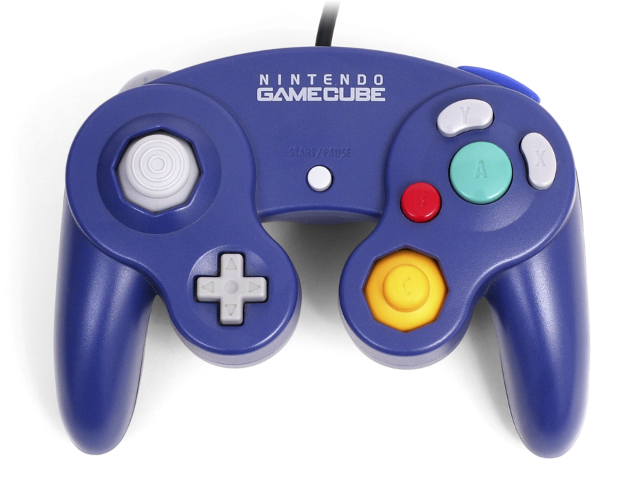

Los componentes de la computadora son las partes físicas que componen un sistema informático. Estos componentes se dividen en dos categorías principales: componentes internos y componentes externos.
Los componentes internos de la computadora son aquellos que se encuentran dentro de la carcasa de la computadora y no son visibles para el usuario. Estos componentes incluyen la placa base, el procesador, la memoria y los dispositivos de almacenamiento.
Una placa base es una placa de circuito central que sirve como base de un sistema informático. Es el componente principal que se conecta y se comunica con todos los demás componentes internos, como el procesador, la memoria y los dispositivos de almacenamiento.
La placa base contiene una serie de componentes y características importantes. Estos incluyen el zócalo de la CPU,
que es donde se instala el procesador, las ranuras de memoria, que se utilizan para instalar módulos de memoria,
 y las ranuras de expansión, que se utilizan para instalar hardware adicional, como tarjetas gráficas y tarjetas de
sonido. La placa base también contiene el BIOS, que es el sistema básico de entrada/salida que controla el inicio y
el funcionamiento de la computadora.
y las ranuras de expansión, que se utilizan para instalar hardware adicional, como tarjetas gráficas y tarjetas de
sonido. La placa base también contiene el BIOS, que es el sistema básico de entrada/salida que controla el inicio y
el funcionamiento de la computadora.
 Una CPU, o Unidad Central de Procesamiento, es el componente principal de un sistema informático. Es responsable de
ejecutar instrucciones y realizar cálculos. El rendimiento de un sistema informático está determinado en gran medida
por la velocidad y las capacidades de la CPU. Los diferentes modelos de CPU pueden tener diferentes características,
como la cantidad de núcleos y la velocidad del reloj.
Una CPU, o Unidad Central de Procesamiento, es el componente principal de un sistema informático. Es responsable de
ejecutar instrucciones y realizar cálculos. El rendimiento de un sistema informático está determinado en gran medida
por la velocidad y las capacidades de la CPU. Los diferentes modelos de CPU pueden tener diferentes características,
como la cantidad de núcleos y la velocidad del reloj.
RAM, o memoria de acceso aleatorio, es un tipo de memoria que se utiliza para almacenar datos e instrucciones que la computadora utiliza activamente. Es una memoria volátil, lo que significa que pierde su contenido cuando se apaga la alimentación.

La RAM es un componente importante de un sistema informático, ya que permite que la CPU acceda a datos e instrucciones de manera rápida y eficiente. La cantidad de RAM instalada en un sistema informático puede afectar su rendimiento, ya que más RAM permite que la CPU acceda a más datos e instrucciones a la vez. Diferentes sistemas informáticos pueden tener diferentes cantidades de RAM y, a menudo, es posible actualizar la RAM en un sistema para mejorar su rendimiento.
Los discos duros son un tipo de dispositivo de almacenamiento que se utilizan para almacenar datos de forma
permanente.
 No son volátiles, lo que significa que conservan su contenido incluso cuando se apaga la
alimentación. Los discos duros suelen ser componentes internos de un sistema informático y se instalan dentro de la
carcasa de la computadora. Se utilizan comúnmente para almacenar el sistema operativo, las aplicaciones y otros
datos necesarios para que la computadora funcione.
No son volátiles, lo que significa que conservan su contenido incluso cuando se apaga la
alimentación. Los discos duros suelen ser componentes internos de un sistema informático y se instalan dentro de la
carcasa de la computadora. Se utilizan comúnmente para almacenar el sistema operativo, las aplicaciones y otros
datos necesarios para que la computadora funcione.
Una unidad de fuente de alimentación (PSU) es un componente de un sistema  informático que proporciona energía a los
demás componentes. Convierte la alimentación de CA del toma corriente de pared en alimentación de CD, que es
utilizada por la computadora.
informático que proporciona energía a los
demás componentes. Convierte la alimentación de CA del toma corriente de pared en alimentación de CD, que es
utilizada por la computadora.
La fuente de alimentación es un componente importante de un sistema informático, ya que proporciona la energía necesaria para operar los otros componentes. Diferentes sistemas informáticos pueden requerir diferentes cantidades de energía, y la fuente de alimentación debe elegirse para que coincida con los requisitos de energía del sistema. Además, la calidad de la PSU puede afectar la estabilidad y confiabilidad del sistema, por lo que es importante elegir una PSU de alta calidad.
Los componentes externos de la computadora, por otro lado, son aquellos que se encuentran fuera de la carcasa de la computadora y son visibles para el usuario. Estos componentes incluyen el teclado, el mouse, el monitor y los altavoces. Tanto los componentes internos como los externos son esenciales para el correcto funcionamiento de un sistema informático.
Los controladores de videojuegos a menudo se usan en computadoras personales (PC) para brindar una experiencia de juego más inmersiva e intuitiva. Estos controladores generalmente están diseñados para imitar los controles y botones que se encuentran en las consolas, como Xbox o PlayStation, y se pueden conectar a una PC a través de un puerto USB.
El uso de un controlador de videojuegos en una PC puede proporcionar una serie de beneficios. Por ejemplo, puede permitir a los jugadores usar el mismo controlador al que están acostumbrados en una consola, lo que puede facilitar la transición a los juegos de PC. También puede proporcionar un control más preciso sobre los juegos, ya que muchos controladores están diseñados específicamente para juegos y tienen funciones como palancas analógicas y gatillos. Además, el uso de un controlador puede brindar una experiencia de juego más cómoda, ya que permite a los jugadores sostener el controlador en sus manos en lugar de usar un teclado y un mouse.
En general, el uso de controladores de videojuegos en PC se ha vuelto cada vez más popular en los últimos años y muchos jugadores los usan para mejorar su experiencia en la PC.
MIDI se usa a menudo en computadoras personales (PC) para crear, editar y reproducir composiciones musicales. El software de PC, como estaciones de trabajo de audio digital (DAW) y secuenciadores MIDI, se puede utilizar para grabar, manipular y reproducir datos MIDI. Esto permite a los músicos crear arreglos musicales y composiciones complejas en sus PC.
MIDI también se usa comúnmente en la educación musical en PC, ya que permite a los estudiantes aprender sobre conceptos y técnicas musicales de manera práctica. El software educativo, como el software de notación musical y los instrumentos virtuales, se puede utilizar con MIDI para proporcionar una experiencia de aprendizaje más interactiva y atractiva.
En general, el uso de MIDI en PC se ha vuelto cada vez más popular en los últimos años y es una herramienta importante para músicos y educadores musicales.